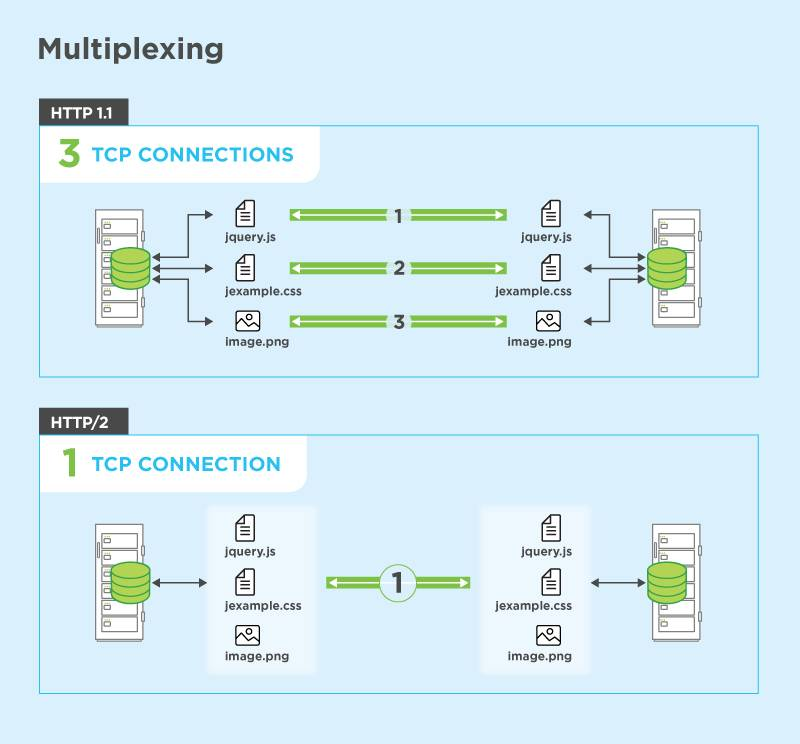
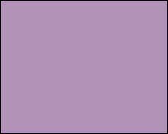
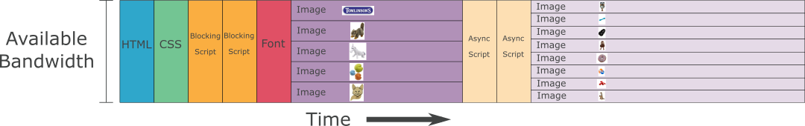

HTTP/2 е обновената версия на HTTP протокола, използван световната мрежа World Wide Web (WWW). Основната роля на протокола е да пренася данни в Уеб. Ето защо бе необходимо и основният протокол, отговорен за доставянето на информация в Интернет, да бъде обновен с втората си основна версия HTTP/2.
Целта на обновения HTTP/2 протокол е цялостно да подобри представянето на уеб страниците, оптимизирайки работата на HTTP протокола и повишавайки скоростта, с която се пренасят данните и се обменят със сървъра. Основният HTTP протокол не е променен в същността си, но нуждата от подобрения в скоростта на зареждане и нови функционалности, наложи старият протокол да бъде обновен.
Подобрения в HTTP/2 протокола
HTTP/2 е бинарен (двоичен), а не текстов протокол, което го прави по-кратък и производителен. Бинарният протокол използва мултиплексиране на връзката клиент - сървър.
HTTP/2 е напълно мултиплексиран. Това означава, че той може да изпраща множество заявки за информация паралелно, използвайки една-единствена TCP връзка.

Компресирани хедъри със специално създадения HPACK - помага за намаляване обема на постоянно обменящите се хедъри (пакети от информация ) между сървъра и клиента, което оказва влияние върху бързината на сайта.
HTTP/2 има сложна схема на приоритизиране - подаваме към браузърите коя информация приоритетно да се зарежда спрямо друга. Например, задаваме на браузър, поддържащ HTTP/2 първо да зареди HTML-a за страницата, след това CSS и JavaScript-a, а за края да остави изображенията. Тази подредба позволява браузърите да зареждат страниците максимално бързо и да доставят важната информация първа.
Пример:
Как би заредила една категорийна страница на обикновен онлайн магазин, използвайки схемата за приоритизиране на HTTP/2.
1. HTML файлът за страницата - 1 ресурс
2. 1 външен stylesheet (CSS файл) - 1 ресурс
3. 4 външни scripts (JavaScript) - тъмнооранжевите са blocking scripts, a светлите - asynchronous scripts - 4 ресурсa
4. 1 персонализиран (custom) уеб шрифт - 1 ресурс
5.  13 изображения. Първите 5 тъмнолилави кутийки представляват логото и първите 4 снимки на продукти, които се виждат на първи екран; останалите 8 светлолилави кутийки са други 8 изображения на продукти, които се виждат чак след скрол. - 13 ресурсa
За целта на примера приемаме, че всички ресурси по-горе са с еднакъв размер и всяка зарежда в браузъра на потребителя за 1 секунда, което означава, че крайното време за зареждане е 20 секунди. Това, което прави голямата разлика от гледна точка на user experience обаче, е начинът и последователността на зареждане на всеки от ресурсите. На схемата може да се наблюдава тази последователност:

Както може да видите, в първата 1 секунда от зареждането потребителят ще види само HTML структурата на страницата. След изминаване на 2 секунди, той вижда CSS-a, след това блокиращия JavaScript, визуализация на персонализирания шрифт (а не системен), първите 5 изображения, които са видими на първия екран, след това асинхронния JS и на последно място - 8 ресурса, които са видими чак след като скролнем надолу по страницата.
20 секунди време на зареждане не са никак малко, но използвайки приоритета на зареждане по-горе, потребителят вижда в правилния момент информацията, която може да асимилира. Не е по-важно да се заредят последните 8 изображения например, които дори не се виждат на страницата първоначално, за сметка на CSS-a.
Още по темата може да прочетете в статията Better HTTP/2 Prioritization for a Faster Web от блога на Cloudflare.
Stream dependencies - клиентът посочва на сървъра ресурсите с най-висок приоритет
Server push - сървърът изпраща ресурси, за които клиентът не е подал заявка. Това забавя латенцията, когато се зарежда множество различно по вид съдържание.
След като разгледахме основата на HTTP/2, нека преминем към историята на създаването му.
Към история